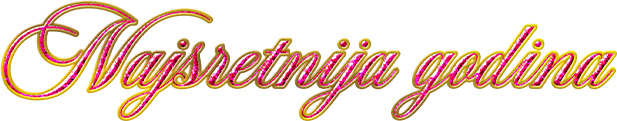

Heeeeeej ljubaviiiiiii!!!! SRETNA NAM PRVA GODIŠNJICAAAAAA!!!!!!! Nadam se da ti se sviđa poklon. Puno je truda uloženo u njega, nisam bio u mogućnosti ti kupiti išta ekstravagantno nažalost, ali mi je zato na pamet pala ideja da napravim stranicu kojom ću katalogizirati našu vezu kroz godine. To znači da planiram updateat ovu stranicu svaku našu novu godišnjicu s novim slikama u galeriji!!! Da dobro si čula, galeriji, možeš ju pronaći dolje kad klikneš na lijevi gumb. A desni gumb je tajno iznenađenje o kojem ti neću ništa govorit. To možda i najbolje da pogledaš sama, ali to sam ti već sve rekao uživo prije nego što si pročitala sve ovo.
Prije nego što pogledaš ostatak stranice samo ti se želim zahvaliti i ovdje na nezaboravnoj, predivnoj, preispunjenoj godini. Bez preuveličavanja najboljih, najsretnijih, najveselijih godinu dana mog čitavog života. I dok sam uz tebe mogu računat na to da će iz godine u godinu svaka bit još bolja i bolja. Iz sveg srca ti hvala na svemu. Volim te najviše na cijelom svijetu, uvijek ćeš biti moja ljubav, moje srce, moj mali pilić, uvijek ću te držati u mislima cijeli život, pa i onaj poslije. Da ne duljim previše prepuštam ti ostatak stranice. PUSAAAAAAAAAAAAAA MWWWWWWAAAAAAHHHHHHHH
:)